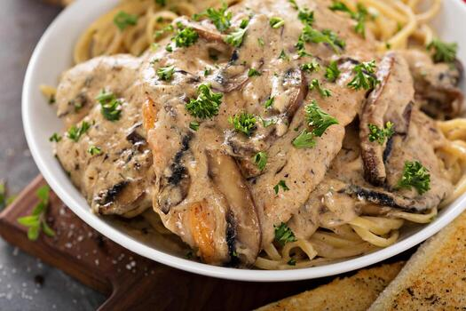

Home
Chicken Marsala
Chicken and Rice Soup
Tofu Lo-Mein
Chicken Marsala

Description
Chicken marsala, a dish made for the heart. This dish is pan-fried with marsala wine, cream, mushrooms, and green onions.
Commonly served with pasta or occasionally mashed potatoes.
Ingredients
- 3 tablespoons of olive oil
- 4 skinless boneless chicken breasts, pounded
- 1 cup sliced fresh mushrooms
- ¼ cup chopped green onion
- 1⁄3 cup dry Marsala wine
- salt and pepper (to taste)
- 1⁄3 heavy cream
- 1⁄8 cup of milk
- fresh parsley
- lemon wedges
Steps
- Gather ingredients
- Heat olive oil in a large skillet over medium heat.
Add chicken and cook, turning once halfway through,
until golden brown on both sides and no longer pink in the center.
- Add mushrooms and green onions to the skillet; sauté until softened
and lightly browned, about 5 minutes. Pour in Marsala wine and use a
wooden spoon to scrape up any browned bits from the bottom of the pan; bring to a boil.
- Stir in cream and milk; cook over low heat until cream has just heated through;
do not boil after adding cream to prevent curdling. Season to taste with salt
and pepper and garnish with fresh parsley and lemon wedges.
- Serve and enjoy.